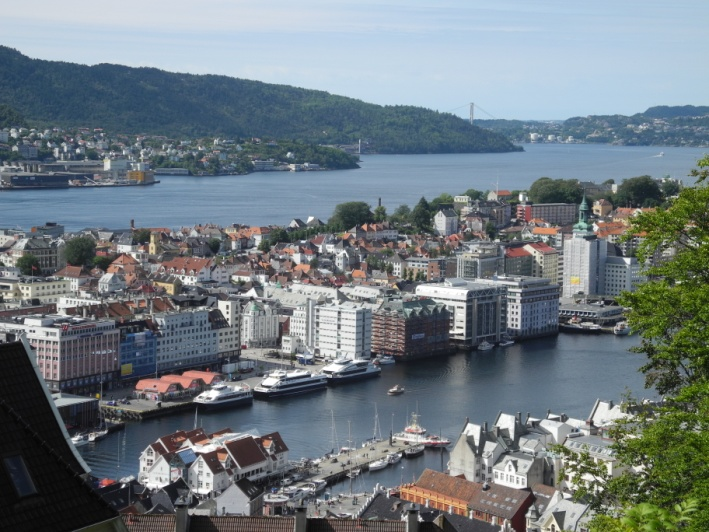
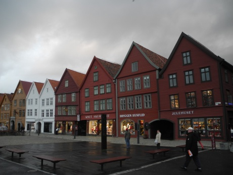
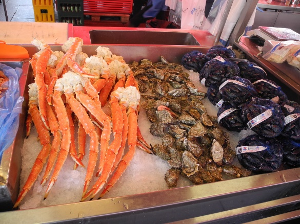

Именно из этого города начинаются все маршруты к природным красотам Норвегии. По городу курсируют вот такие экскурсионные паровозики, в которых находятся наушники с электронным переводчиком на несколько языков. Берген является вторым по величине городом Норвегии. Он был основан между 1066 и 1093 годами, а в XIII веке Берген стал столицей Норвежского королевства, оставаясь самым большим городом страны вплоть до XX столетия. Экономический расцвет города определило его удачное экономико-географическое положение. Берген являлся одним из влиятельных членов Ганзейского союза, который заключили между собой купцы европейских и балтийских городов в XIV веке. Необходимость обслуживания торговли и мореходства, а также благоприятные возможности для сбыта ремесленной продукции привлекли в Берген мастеров различных специальностей. Во второй половине 20 столетия начался поиск нефти, что привело к значительному экономическому подъему и оказало положительное влияние на благосостояние, промышленность и торговлю. Сегодня Берген по-прежнему является центром норвежской нефтяной промышленности, судоходства и рыболовства, а также город превратился в крупный центр океанографических исследований и исследований окружающей среды.
Самая знаменитая улица в мире – это Ганзейская набережная Бергена, которая занесена в список мировых культурных ценностей ЮНЕСКО. На улице Брюгген находятся деревянные дома, построенные свыше 300 лет назад. В них до сих пор живут люди, в них находятся магазины и бары, и здесь же есть мастерские по изготовлению сувениров. Здесь же находятся известные магазины – Рождественский, где круглый год продаются рождественские подарки и Олений, где весь товар от тапочек до свитеров изготовлен из оленьей кожи и шерсти. Чтобы увидеть весь город, можно на фуникулере подняться на смотровую площадку.
Жизнь в Бергене всегда была связана с рыболовством, которым занимаются на водах за пределами города и вдоль всего норвежского побережья. Символом Бергена является древний Рыбный рынок. Здесь можно приобрести не только традиционные виды рыб, но и креветки, осьминоги или омары. Рынок отличается демократичными по норвежским меркам ценами. По вашему желанию Вам здесь же приготовят любую рыбу и морепродукты, от количества которых разбегаются глаза. Многие виды морской рыбы обитают в Бергенском бассейне-аквариуме. Там же можно увидеть представление тюленей, и даже посмотреть на тарантулов и крокодилов. Но все-таки Берген – древний город, прогулка по которому переносит туристов в Средневековье. В нем очень хорошо сохранились памятники истории и архитектуры, что и привлекает туристов, несмотря на постоянный дождь. Сами норвежцы говорят, что в Бергене дождь идет 295 дней в году, но норвежцы делают все, чтобы туристам было интересно. Здесь много этнографических музеев, деревянных церквей и каменных кирх и прочих памятников старины, которые сохраняются и поддерживаются в хорошем состоянии. Жизнь в Бергене всегда была связана с рыболовством, которым занимаются на водах за пределами города и вдоль всего норвежского побережья. Символом Бергена является древний Рыбный рынок. Здесь можно приобрести не только традиционные виды рыб, но и креветки, осьминоги или омары. Рынок отличается демократичными по норвежским меркам ценами. По вашему желанию Вам здесь же приготовят любую рыбу и морепродукты, от количества которых разбегаются глаза. Многие виды морской рыбы обитают в Бергенском бассейне-аквариуме. Там же можно увидеть представление тюленей, и даже посмотреть на тарантулов и крокодилов. Но все-таки Берген – древний город, прогулка по которому переносит туристов в Средневековье. В нем очень хорошо сохранились памятники истории и архитектуры, что и привлекает туристов, несмотря на постоянный дождь. Сами норвежцы говорят, что в Бергене дождь идет 295 дней в году, но норвежцы делают все, чтобы туристам было интересно. Здесь много этнографических музеев, деревянных церквей и каменных кирх и прочих памятников старины, которые сохраняются и поддерживаются в хорошем состоянии.